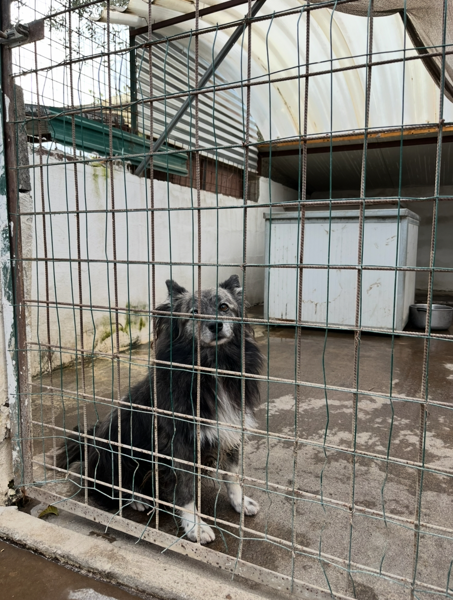

1. Partenza
In piedi alle 11 inoltrate: piccoli gesti di risveglio, vestito al volo,
prese chiavi–cellulare–occhiali e via.
Direzione il rifugio degli animali di Silvana.
2A. Arrivo e prime impressioni
All’arrivo scopro di esserci già stato — e infatti la sensazione è la stessa: un’ottima impressione, immediata e confermata.
2B. L’incontro con i cani
Ho conosciuto, tramite Cinzia e Manuela, i nuovi arrivati e ho rivisto alcuni
cani già incontrati in passato.
Che bellini, davvero.
3. Ritorno a casa
Sulla via del rientro sono passato da una cara amica, Giorgia; poi un salto da Decathlon e infine una partita a Gli animali di Baker Street con mia sorella — perfetto in tema col pomeriggio.
Stamattina avevo bisogno di catapultarmi fuori di casa, e l’open day è stata
l’occasione migliore. Anche la partitina serale è stata super carina.
Una giornata semplice e piacevole. Ciaooo.